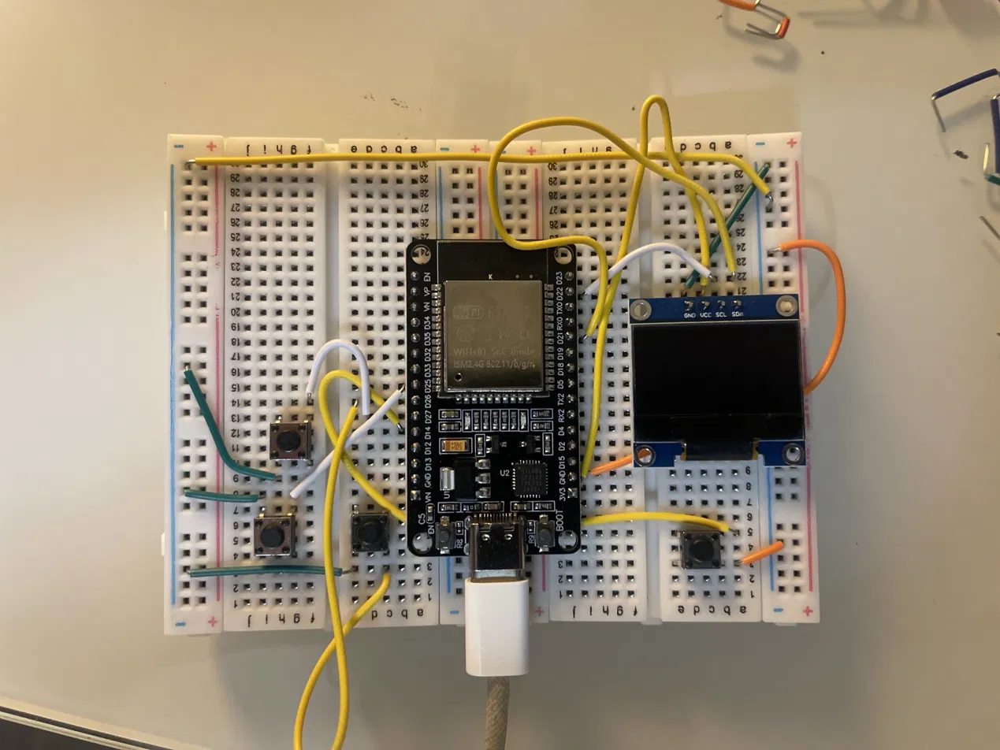

Ninja Clash
An 8-bit side-view fight on an ESP32 with a 128x64 OLED. One hero against a squad of ninjas that rush in and throw shuriken.
The build
Four buttons (left, right, jump, attack) and an SSD1306 OLED on a breadboard, driven by an ESP32. The OLED talks over I2C on GPIO 21 (SDA) and GPIO 22 (SCL).

Wiring
- OLED SDA → GPIO 21, SCL → GPIO 22, VCC → 3V3, GND → GND
- LEFT → GPIO 25, RIGHT → GPIO 26, JUMP → GPIO 27, ATTACK → GPIO 14
- Each button sits between its pin and GND (internal pull-ups)
Code
Libraries: Adafruit GFX and Adafruit SSD1306.
My thoughts
Notes on what I learned, what went wrong, and what I'd do differently.